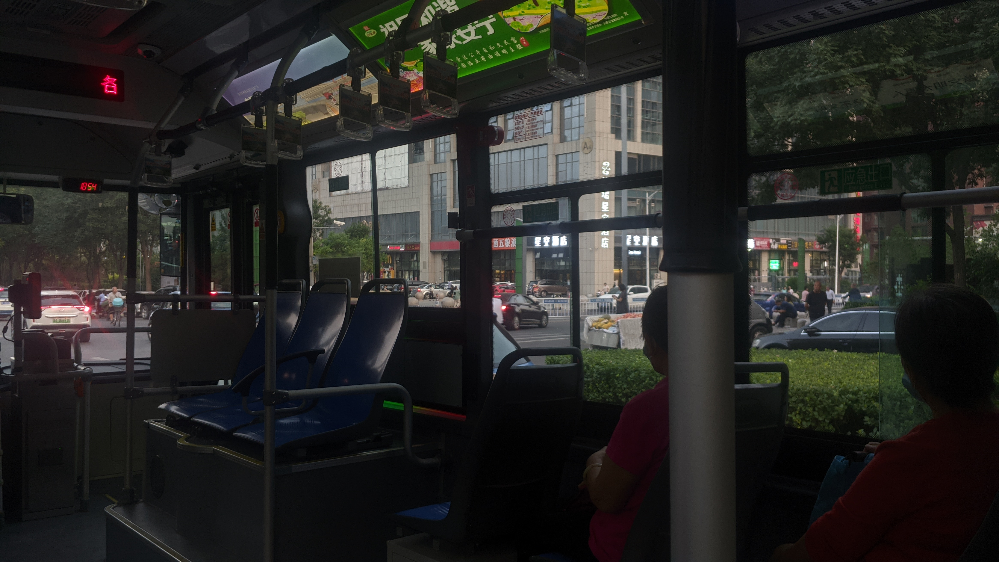

同时也是一次怀旧
高三的补课生活结束了，也意味着高中生活的最后一个部分也开始了
这次“旅行”其实也只是自己上下学经常走的路而已，但这次却变得有些意义
路上听的歌
因为修路，所以公交站离的有点远，但最后还是找到站牌了

我上学的地方建筑风格比较综合，你既可以见到高楼大厦，购物中心，你也可以见到一些90年代的老建筑和一些村庄里的平房，而这两者之间步行的时间大概是1到2个小时
而这个公交站…我个人认为是一个分界点，一边是村庄，一边是城市
其实这样挺好的，作为一个喜欢怀旧的人来说，我还是想去看看那些村里的平房。因为小时候的无忧无虑让我把村里的风景记在心中
“但如果是进入一个陌生的村子里会被里面的人赶出来吧”我抱着这样的想法走上了公交
看来还是得回到老家才能好好感受嘛(￣▽￣)”


说实话，我认为坐公交是一种很舒适的“旅行”方式，比开车和骑电动车舒适很多
因为在公交车上玩手机不会头晕，睡觉比较舒服（睡醒了一抬头就是风景）
而且公交车是按照既定路线走的，会绕一些弯，能看到原来的道路上看不到的风景
如果遇到夕阳时的公交车就更好了，风景很好看，盯着窗外看可以让自己放飞思绪

当公交车慢慢行走的过程中，我又一次体验到了这里建筑风格的复杂
这次不仅有上面提到过的之外，还有在山西的县里能见到的门面房（没有照片），于是开始想起以前去老家的事情，发现距离上次回到老家已经五年了。
不知道什么时候能再回去一趟呢…

慢慢的从晋源区回到迎泽区…
天色已经完全黑了…
迎泽区也是有一些特色的，沿着迎泽大街走，可以看到很多的高楼，而且广场那里在修建一座假古城，看上去也确实有这个样子
但是如果随便转转的话，会发现有很多的小巷子，这些巷子的路有宽有窄，店面很多，基本上是随处可见，这些巷子也构成了这里独特的风景

最后还是来到了旅途的终点–太原火车站
很抱歉，因为修路的不便，我最后还是打车完成后面的路程了
这次公交“旅行”，如果说是在两年前的话我是不怎么在乎的，因为那时候我几乎是天天坐公交，根本不会太在意
但是现在，我把身边这些“微不足道的小事”重新拾起来，看到了不一样的风景
他让我回想起了孩提时期那些日子，也让我知道了时间的流逝有多么快
“正因为时间流逝得很快，我们才要好好珍惜每一个今天嘛”
我抱着这样的想法回到了家
一如既往的，感谢你能看到最后╰(￣ω￣ｏ)
END